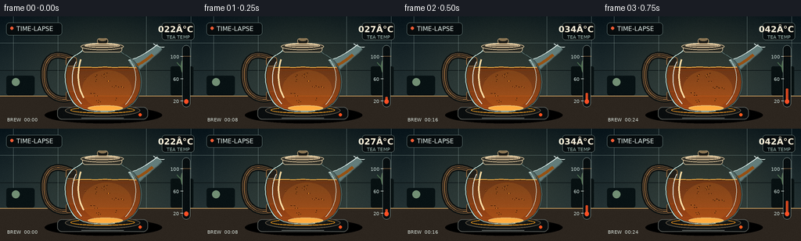
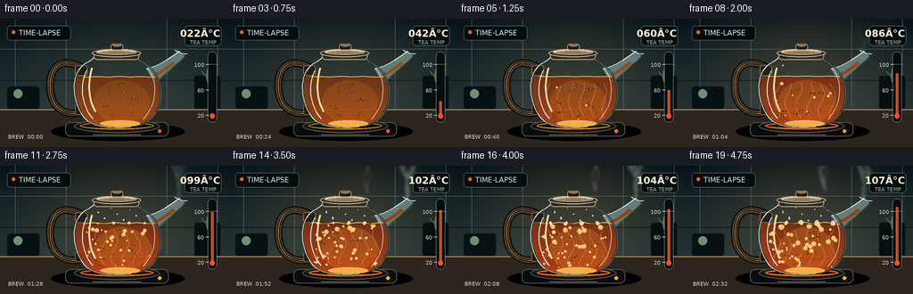
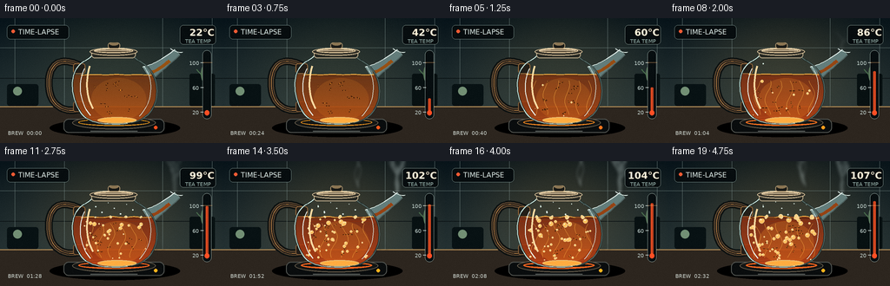
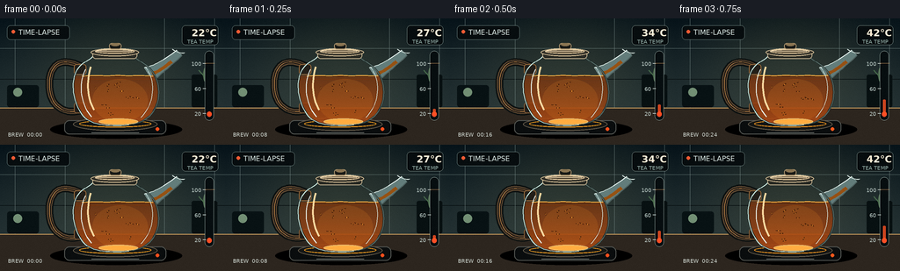

CODING AGENTS AS PIXEL WORLD MODELS
traex/GPT-5.6-Sol · phygen_109
点击播放 · 原生 RGB 像素
逐轮保存的候选
回放视频、检查图与代码变化。
每份候选均可单独播放。实际图片检查记录在下方工具轨迹中。
候选 01播放与检查图
点击播放 · 原生 RGB 像素

展开代码变化
--- 上一保存版本
+++ 本次保存版本
@@ -0,0 +1,313 @@
+from pathlib import Path
+import math
+import numpy as np
+from PIL import Image, ImageDraw, ImageFilter, ImageFont
+import artifact_io
+
+# Procedural, deterministic timelapse illustration. Everything is rendered at 3x
+# resolution and reduced for clean glass edges and tiny bubbles.
+W, H, N = 256, 144, 20
+S = 3
+RW, RH = W*S, H*S
+rng = np.random.default_rng(109)
+
+try:
+ FONT_S = ImageFont.truetype('/usr/share/fonts/truetype/dejavu/DejaVuSans.ttf', 6*S)
+ FONT_M = ImageFont.truetype('/usr/share/fonts/truetype/dejavu/DejaVuSans.ttf', 8*S)
+ FONT_B = ImageFont.truetype('/usr/share/fonts/truetype/dejavu/DejaVuSans-Bold.ttf', 11*S)
+except Exception:
+ FONT_S = FONT_M = FONT_B = ImageFont.load_default()
+
+def scxy(p): return tuple(int(round(v*S)) for v in p)
+def pts(seq): return [scxy(p) for p in seq]
+
+def cubic(p0,p1,p2,p3,n=30):
+ out=[]
+ for u in np.linspace(0,1,n):
+ v=1-u
+ out.append((v**3*p0[0]+3*v*v*u*p1[0]+3*v*u*u*p2[0]+u**3*p3[0],
+ v**3*p0[1]+3*v*v*u*p1[1]+3*v*u*u*p2[1]+u**3*p3[1]))
+ return out
+
+def ellipse(draw, box, **kw): draw.ellipse(scxy((box[0],box[1]))+scxy((box[2],box[3])), **kw)
+def line(draw, seq, fill, width=1, joint='curve'):
+ draw.line(pts(seq), fill=fill, width=max(1,int(width*S)), joint=joint)
+def polygon(draw, seq, **kw): draw.polygon(pts(seq), **kw)
+def roundrect(draw, box, radius, **kw): draw.rounded_rectangle(scxy((box[0],box[1]))+scxy((box[2],box[3])), radius=int(radius*S), **kw)
+
+# Body silhouette, clockwise. Kept constant to make object identity completely stable.
+body = []
+body += cubic((106,42),(104,47),(95,49),(91,54),10)
+body += cubic((91,54),(79,66),(82,92),(91,106),20)[1:]
+body += cubic((91,106),(98,119),(112,122),(133,122),15)[1:]
+body += cubic((133,122),(158,122),(173,115),(179,96),16)[1:]
+body += cubic((179,96),(185,72),(173,55),(158,48),18)[1:]
+body += cubic((158,48),(154,46),(154,43),(153,42),8)[1:]
+
+# deterministic particle definitions
+bubble_defs=[]
+for i in range(46):
+ bubble_defs.append({
+ 'x': float(rng.uniform(98,169)), 'phase':float(rng.random()),
+ 'period':float(rng.uniform(.34,.78)), 'r':float(rng.uniform(.65,2.0)),
+ 'wig':float(rng.uniform(1.2,4.0)), 'start':float(rng.uniform(.25,.93))
+ })
+leaf_defs=[]
+for i in range(16):
+ leaf_defs.append((float(rng.uniform(0,2*math.pi)), float(rng.uniform(.35,.95)), float(rng.uniform(.5,1.5))))
+steam_defs=[]
+for i in range(12):
+ steam_defs.append((float(rng.uniform(0,1)), float(rng.uniform(-1,1)), float(rng.uniform(.75,1.4))))
+
+temps = [22,27,34,42,51,60,69,78,86,92,97,99,100,101,102,103,104,105,106,107]
+
+def render(k):
+ t=k/(N-1)
+ temp=temps[k]
+ # heat is a physically legible progression: calm -> convection -> nucleation -> rolling boil
+ warm=np.clip((temp-35)/65,0,1)
+ boil=np.clip((temp-94)/13,0,1)
+
+ # Cinematic kitchen backdrop, blue shadows gradually warmed by the burner.
+ yy=np.arange(RH)[:,None]
+ xx=np.arange(RW)[None,:]
+ top=np.array([18,31,36.],float); bot=np.array([43,57,58.],float)
+ f=np.minimum(yy/(104*S),1)[...,None]
+ arr=np.broadcast_to(top,(RH,RW,3)).copy()*(1-f)+np.broadcast_to(bot,(RH,RW,3))*f
+ # soft practical light centered on kettle
+ glow=np.exp(-(((xx/S-133)/92)**2+((yy/S-57)/72)**2))[...,None]
+ arr += glow*np.array([13+14*warm,10+6*warm,2.0])
+ # vignette
+ vig=np.clip(((xx/S-128)/160)**2+((yy/S-72)/105)**2,0,1)[...,None]
+ arr-=vig*np.array([12,12,10])
+ im=Image.fromarray(np.uint8(np.clip(arr,0,255)),'RGB').convert('RGBA')
+ d=ImageDraw.Draw(im,'RGBA')
+
+ # matte backsplash tiles and grout
+ line(d, [(0,34),(256,34)], (122,143,139,35), .45)
+ line(d, [(0,69),(256,69)], (8,15,17,55), .7)
+ for x in [17,74,187,244]: line(d,[(x,0),(x,102)],(130,149,145,25),.45)
+ # far shelf silhouettes and a tiny warm practical reflection
+ roundrect(d,(8,76,44,101),3,fill=(8,18,20,70))
+ ellipse(d,(15,79,25,89),fill=(114,143,116,25))
+ roundrect(d,(218,64,247,101),2,fill=(8,17,18,60))
+ ellipse(d,(231,55,238,73),fill=(80,108,81,80))
+ line(d,[(235,69),(226,59)],(74,110,77,90),1)
+ line(d,[(235,68),(243,57)],(67,100,72,90),1)
+
+ # counter plane and soft cast shadow
+ polygon(d,[(0,102),(256,102),(256,144),(0,144)],fill=(45,38,31,255))
+ line(d,[(0,102),(256,102)],(193,150,90,55),1)
+ ellipse(d,(57,116,207,137),fill=(0,0,0,80))
+
+ # hot plate, with progressively orange heating ring
+ roundrect(d,(73,116,189,132),6,fill=(10,13,14,255),outline=(83,86,82,220),width=1*S)
+ ellipse(d,(83,113,179,128),fill=(20,22,21,255),outline=(104,94,77,180),width=1*S)
+ heat_alpha=int(40+155*warm)
+ ellipse(d,(90,116,172,124),outline=(255,103+int(60*(1-warm)),32,heat_alpha),width=max(S,int((1+warm)*S)))
+ # front light and control
+ ellipse(d,(177,124,181,128),fill=(255,80+int(100*warm),29,100+int(155*warm)))
+ line(d,[(104,130),(158,130)],(137,143,138,65),.7)
+
+ # Steam is behind the pot and visibly strengthens/multiplies after boiling.
+ steam=Image.new('RGBA',(RW,RH),(0,0,0,0)); sd=ImageDraw.Draw(steam,'RGBA')
+ steam_amt=np.clip((temp-78)/29,0,1)
+ active=max(0,int(1+steam_amt*11)) if steam_amt>0 else 0
+ origins=[(201,41),(200,40),(155,34),(158,35)]
+ for i in range(active):
+ ph, drift, scale=steam_defs[i]
+ ox,oy=origins[0] if i<8 else origins[2+i%2]
+ life=(t*2.6+ph)%1.0
+ length=(13+27*steam_amt)*scale
+ y0=oy-2-life*7
+ path=[]
+ for j in range(28):
+ q=j/27
+ y=y0-q*length
+ x=ox + drift*q*8 + math.sin(q*2.4*math.pi+i*1.7+t*1.8)* (1.2+3*q)
+ path.append((x,y))
+ alpha=int((25+85*steam_amt)*(math.sin(math.pi*min(.98,life+.12))*.55+.35))
+ line(sd,path,(224,241,237,alpha),1.2+1.5*steam_amt)
+ steam=steam.filter(ImageFilter.GaussianBlur(2.0*S))
+ im.alpha_composite(steam); d=ImageDraw.Draw(im,'RGBA')
+
+ # Handle behind the glass body: broad blackened wood loop with warm rim light.
+ handle=cubic((95,56),(69,42),(55,52),(56,78),22)+cubic((56,78),(57,99),(72,111),(94,104),22)[1:]
+ line(d,handle,(12,17,17,245),9)
+ line(d,handle,(94,72,49,235),5.8)
+ line(d,handle,(32,27,23,255),3.5)
+ line(d,handle[2:-3],(220,154,82,70),.7)
+ # handle mounts
+ roundrect(d,(84,52,98,64),3,fill=(35,31,25,255),outline=(150,105,59,150),width=S)
+ roundrect(d,(84,96,99,108),3,fill=(34,29,24,255),outline=(135,94,55,150),width=S)
+
+ # Long glass spout behind main body, constructed from two smooth curves.
+ spout_top=cubic((164,56),(179,53),(192,43),(201,36),18)
+ spout_bot=cubic((174,72),(184,62),(199,50),(207,42),18)
+ polygon(d,spout_top+list(reversed(spout_bot)),fill=(99,125,123,72),outline=(184,211,204,125))
+ line(d,spout_top,(228,244,238,145),1)
+ line(d,spout_bot,(77,96,94,130),1.2)
+ # tea visible low in the spout, rising nearer the body
+ tea_spout=cubic((173,63),(183,59),(190,53),(195,49),15)
+ line(d,tea_spout,(151,67+int(15*(1-warm)),19,145),3.8)
+ line(d,cubic((196,35),(202,39),(207,40),(210,39),10),(221,236,230,180),1.2)
+
+ # Glass body mask and tea fill.
+ mask=Image.new('L',(RW,RH),0); md=ImageDraw.Draw(mask)
+ polygon(md,body,fill=255)
+ tea=Image.new('RGBA',(RW,RH),(0,0,0,0))
+ ta=np.zeros((RH,RW,4),dtype=np.uint8)
+ surface_y=65.0 - .7*warm
+ for y in range(int(surface_y*S),int(121*S)+1):
+ q=np.clip((y/S-surface_y)/(121-surface_y),0,1)
+ # tea deepens and grows copper highlights while brewing
+ ta[y,:,0]=np.uint8(126+48*q+18*warm)
+ ta[y,:,1]=np.uint8(54+22*q-9*warm)
+ ta[y,:,2]=np.uint8(13+9*q)
+ ta[y,:,3]=np.uint8(185+45*q)
+ tea=Image.fromarray(ta,'RGBA')
+ tea.putalpha(Image.composite(tea.getchannel('A'),Image.new('L',(RW,RH),0),mask))
+ im.alpha_composite(tea); d=ImageDraw.Draw(im,'RGBA')
+
+ # Broad transmitted-light glow through amber tea.
+ glowlay=Image.new('RGBA',(RW,RH),(0,0,0,0)); gd=ImageDraw.Draw(glowlay,'RGBA')
+ ellipse(gd,(105,69,168,118),fill=(255,147,38,34+int(24*warm)))
+ glowlay.putalpha(Image.composite(glowlay.getchannel('A'),Image.new('L',(RW,RH),0),mask))
+ im.alpha_composite(glowlay); d=ImageDraw.Draw(im,'RGBA')
+
+ # Convective currents become visible before boiling: slow coherent curls, not flicker.
+ if warm>.18:
+ for j in range(6):
+ x0=103+j*12.5
+ phase=t*(1.5+2.5*warm)+j*.53
+ path=[]
+ for m in range(18):
+ q=m/17
+ y=111-q*39
+ x=x0+math.sin(q*math.pi*2+phase)* (2+2*warm)
+ path.append((x,y))
+ line(d,path,(255,178,68,int(15+27*warm)),.65)
+
+ # Tea leaves move on elongated convection loops; initial leaves settle, hot leaves circulate.
+ for j,(phase,rad,speed) in enumerate(leaf_defs):
+ ang=phase + warm*t*math.pi*2*speed
+ cx=132+(31*rad)*math.cos(ang)
+ cy=91+(21*rad)*math.sin(ang)
+ if 94<cx<173 and 68<cy<115:
+ r=1.0 if j%3 else 1.5
+ # oriented little leaf
+ dx=math.cos(ang+.8)*r*2; dy=math.sin(ang+.8)*r
+ line(d,[(cx-dx,cy-dy),(cx+dx,cy+dy)],(67,29,9,120),1.1)
+ ellipse(d,(cx-.35,cy-.35,cx+.35,cy+.35),fill=(248,155,46,90))
+
+ # Bubbles: count, size and turbulence ramp with temperature; rising paths are coherent in time.
+ for i,b in enumerate(bubble_defs):
+ if warm < b['start']*.72: continue
+ # More tracks become active only around boiling.
+ if i>9 and boil < (i-9)/46*.8: continue
+ speed=.35+1.85*boil+.35*warm
+ cyc=(t*speed/b['period']+b['phase'])%1
+ y=114-cyc*(43+7*boil)
+ x=b['x']+math.sin(cyc*math.pi*3+i)*b['wig']*boil
+ # constrain to curved vessel interior
+ half=42*(1-0.38*((y-91)/31)**2)
+ if not (132-half < x < 132+half) or y<66: continue
+ rr=b['r']*(.65+cyc*.65)*(0.65+0.65*boil)
+ alpha=int(70+105*boil)
+ ellipse(d,(x-rr,y-rr,x+rr,y+rr),fill=(255,193,93,20),outline=(255,229,174,alpha),width=max(1,int(.55*S)))
+ ellipse(d,(x-rr*.42,y-rr*.55,x-rr*.05,y-rr*.15),fill=(255,255,237,110))
+
+ # Animated meniscus and rolling surface; wave amplitude rises sharply at 100 C.
+ surf=[]
+ amp=.25+.9*boil
+ for x in np.linspace(93,174,90):
+ edge=((x-133)/43)**2
+ y=surface_y + amp*math.sin((x-90)*.25+t*13) + .36*edge
+ surf.append((x,y))
+ line(d,surf,(255,184,72,160),1.0)
+ line(d,[(96,surface_y+1),(171,surface_y+1)],(69,30,10,90),.7)
+ if boil>.2:
+ nfoam=int(5+16*boil)
+ for j in range(nfoam):
+ x=98+((j*17.39+k*2.7)%70)
+ r=.7+((j*1.31)%1.8)*boil
+ y=surface_y+math.sin(j*1.9+k*.7)*1.2*boil
+ ellipse(d,(x-r,y-r,x+r,y+r),fill=(255,206,124,45),outline=(255,232,185,int(70+100*boil)),width=max(1,S//2))
+
+ # Condensation beads under the neck/lid after tea nears boiling.
+ cond=np.clip((temp-82)/20,0,1)
+ for j in range(int(11*cond)):
+ x=103+(j*7.1)%57
+ y=47+(j*5.3)%14 + t*2*((j%3)-1)
+ rr=.45+(j%3)*.18
+ ellipse(d,(x-rr,y-rr,x+rr,y+rr),fill=(222,241,232,int(45+90*cond)))
+
+ # Main glass shell over contents: shadow rim and crisp cool/warm reflections.
+ line(d,body+body[:1],(25,37,36,180),2.2)
+ line(d,body[:46],(203,232,222,175),1.0)
+ line(d,body[46:85],(85,105,100,150),1.2)
+ # vertical glass highlights
+ line(d,cubic((97,58),(89,73),(91,98),(104,112),22),(238,250,244,115),1.2)
+ line(d,cubic((103,55),(97,74),(100,94),(107,104),18),(255,220,163,55),2.0)
+ line(d,cubic((165,55),(179,73),(174,99),(160,113),22),(221,240,233,80),.9)
+ ellipse(d,(112,114,157,121),fill=(255,173,65,25),outline=(236,190,111,50),width=S)
+
+ # Neck, lid and knob. Lid remains sharply readable through steam.
+ roundrect(d,(105,36,156,46),4,fill=(41,42,36,225),outline=(184,168,137,170),width=S)
+ ellipse(d,(103,34,158,43),fill=(49,47,39,255),outline=(216,194,154,185),width=S)
+ ellipse(d,(108,35,153,40),fill=(93,80,59,180),outline=(239,213,169,115),width=S)
+ roundrect(d,(124,28,138,35),3,fill=(25,26,23,255),outline=(168,145,108,180),width=S)
+ ellipse(d,(126,28,136,31.5),fill=(139,117,82,170))
+ line(d,[(109,37),(150,37)],(255,232,194,90),.7)
+
+ # Rising heat shimmer directly above plate/pot sides.
+ if warm>.25:
+ sh=Image.new('RGBA',(RW,RH),(0,0,0,0)); hd=ImageDraw.Draw(sh,'RGBA')
+ for j,x0 in enumerate([79,86,181,188]):
+ p=[]
+ for q in np.linspace(0,1,15):
+ p.append((x0+math.sin(q*7+t*8+j)*1.5,116-q*(12+8*warm)))
+ line(hd,p,(248,184,105,int(18+25*warm)),.7)
+ sh=sh.filter(ImageFilter.GaussianBlur(1.2*S)); im.alpha_composite(sh)
+ d=ImageDraw.Draw(im,'RGBA')
+
+ # Informational overlay: explicit temperature makes the >100 C transformation unmistakable.
+ roundrect(d,(8,8,79,24),4,fill=(7,13,15,175),outline=(148,174,169,50),width=max(1,S//2))
+ ellipse(d,(13,13,17,17),fill=(242,91,52,235))
+ d.text(scxy((21,11)), 'TIME-LAPSE',font=FONT_M,fill=(222,235,231,235))
+
+ roundrect(d,(207,8,248,30),4,fill=(7,13,15,195),outline=(162,182,174,65),width=max(1,S//2))
+ # right-align the numeric reading
+ label=f'{temp:03d}°C'
+ bb=d.textbbox((0,0),label,font=FONT_B)
+ d.text((int((247*S-(bb[2]-bb[0]))),10*S),label,font=FONT_B,fill=(255,242,217,255))
+ d.text(scxy((213,23)), 'TEA TEMP',font=FONT_S,fill=(157,184,177,220))
+
+ # slim thermometer at right; 100 C tick is called out and the mercury passes it.
+ gx=238
+ roundrect(d,(233,37,243,116),5,fill=(7,14,16,155),outline=(199,219,211,100),width=max(1,S//2))
+ ellipse(d,(235.2,106,240.8,112),fill=(255,78,38,240))
+ filltop=108-(temp-20)/(110-20)*64
+ roundrect(d,(236.7,filltop,239.3,109),1.3,fill=(255,83,36,235))
+ for val in [20,60,100]:
+ gy=108-(val-20)/90*64
+ line(d,[(230.5,gy),(234,gy)],(224,235,230,150),.7)
+ tx=str(val)
+ bb=d.textbbox((0,0),tx,font=FONT_S)
+ d.text((int(229*S-(bb[2]-bb[0])),int((gy-2.5)*S)),tx,font=FONT_S,fill=(199,215,210,190))
+ gy100=108-(100-20)/90*64
+ line(d,[(233,gy100),(244,gy100)],(255,185,116,105),.55)
+
+ # timestamp reinforces compressed-time direction.
+ d.text(scxy((9,129)),f'BREW 00:{k*8:02d}',font=FONT_S,fill=(206,214,207,140))
+
+ # Subtle deterministic sensor grain, different per frame but low amplitude.
+ rgb=np.array(im.convert('RGB').resize((W,H),Image.Resampling.LANCZOS),dtype=np.int16)
+ grng=np.random.default_rng(700+k)
+ grain=grng.normal(0,0.7,(H,W,1))
+ rgb=np.clip(rgb+grain,0,255).astype(np.uint8)
+ return rgb
+
+frames=np.stack([render(k) for k in range(N)],axis=0)
+artifact_io.save(frames,Path(__file__).resolve().parent)
+print('saved',frames.shape,frames.dtype,'temps',temps[0],temps[-1])
候选 02播放与检查图
点击播放 · 原生 RGB 像素

展开代码变化
--- 上一保存版本
+++ 本次保存版本
@@ -299,7 +299,8 @@
line(d,[(233,gy100),(244,gy100)],(255,185,116,105),.55)
# timestamp reinforces compressed-time direction.
- d.text(scxy((9,129)),f'BREW 00:{k*8:02d}',font=FONT_S,fill=(206,214,207,140))
+ elapsed=k*8
+ d.text(scxy((9,129)),f'BREW {elapsed//60:02d}:{elapsed%60:02d}',font=FONT_S,fill=(206,214,207,140))
# Subtle deterministic sensor grain, different per frame but low amplitude.
rgb=np.array(im.convert('RGB').resize((W,H),Image.Resampling.LANCZOS),dtype=np.int16)
候选 03播放与检查图
点击播放 · 原生 RGB 像素


展开代码变化
--- 上一保存版本
+++ 本次保存版本
@@ -278,7 +278,7 @@
roundrect(d,(207,8,248,30),4,fill=(7,13,15,195),outline=(162,182,174,65),width=max(1,S//2))
# right-align the numeric reading
- label=f'{temp:03d}°C'
+ label=f'{temp}\N{DEGREE SIGN}C'
bb=d.textbbox((0,0),label,font=FONT_B)
d.text((int((247*S-(bb[2]-bb[0]))),10*S),label,font=FONT_B,fill=(255,242,217,255))
d.text(scxy((213,23)), 'TEA TEMP',font=FONT_S,fill=(157,184,177,220))
可观测工具轨迹
实际执行的命令与返回图片。
命令 1exit 0
/bin/bash -lc "ls -la && printf '\\n--- prompt.txt ---\\n' && cat prompt.txt && printf '\\n--- GENERATION_RULES.md ---\\n' && cat GENERATION_RULES.md && printf '\\n--- task_spec.json ---\\n' && cat task_spec.json"
命令 2exit 0
/bin/bash -lc "find . -maxdepth 3 -type f -not -path './.git/*' -printf '%p\\n' | sort"
命令 3exit 0
/bin/bash -lc "sed -n '1,240p' artifact_io.py"
命令 4exit 0
/bin/bash -lc "cat > generate.py <<'PY'
from pathlib import Path
import math
import numpy as np
from PIL import Image, ImageDraw, ImageFilter, ImageFont
import artifact_io
# Procedural, deterministic timelapse illustration. Everything is rendered at 3x
# resolution and reduced for clean glass edges and tiny bubbles.
W, H, N = 256, 144, 20
S = 3
RW, RH = W*S, H*S
rng = np.random.default_rng(109)
try:
FONT_S = ImageFont.truetype('/usr/share/fonts/truetype/dejavu/DejaVuSans.ttf', 6*S)
FONT_M = ImageFont.truetype('/usr/share/fonts/truetype/dejavu/DejaVuSans.ttf', 8*S)
FONT_B = ImageFont.truetype('/usr/share/fonts/truetype/dejavu/DejaVuSans-Bold.ttf', 11*S)
except Exception:
FONT_S = FONT_M = FONT_B = ImageFont.load_default()
def scxy(p): return tuple(int(round(v*S)) for v in p)
def pts(seq): return [scxy(p) for p in seq]
def cubic(p0,p1,p2,p3,n=30):
out=[]
for u in np.linspace(0,1,n):
v=1-u
out.append((v**3*p0[0]+3*v*v*u*p1[0]+3*v*u*u*p2[0]+u**3*p3[0],
v**3*p0[1]+3*v*v*u*p1[1]+3*v*u*u*p2[1]+u**3*p3[1]))
return out
def ellipse(draw, box, **kw): draw.ellipse(scxy((box[0],box[1]))+scxy((box[2],box[3])), **kw)
def line(draw, seq, fill, width=1, joint='curve'):
draw.line(pts(seq), fill=fill, width=max(1,int(width*S)), joint=joint)
def polygon(draw, seq, **kw): draw.polygon(pts(seq), **kw)
def roundrect(draw, box, radius, **kw): draw.rounded_rectangle(scxy((box[0],box[1]))+scxy((box[2],box[3])), radius=int(radius*S), **kw)
# Body silhouette, clockwise. Kept constant to make object identity completely stable.
body = []
body += cubic((106,42),(104,47),(95,49),(91,54),10)
body += cubic((91,54),(79,66),(82,92),(91,106),20)[1:]
body += cubic((91,106),(98,119),(112,122),(133,122),15)[1:]
body += cubic((133,122),(158,122),(173,115),(179,96),16)[1:]
body += cubic((179,96),(185,72),(173,55),(158,48),18)[1:]
body += cubic((158,48),(154,46),(154,43),(153,42),8)[1:]
# deterministic particle definitions
bubble_defs=[]
for i in range(46):
bubble_defs.append({
'x': float(rng.uniform(98,169)), 'phase':float(rng.random()),
'period':float(rng.uniform(.34,.78)), 'r':float(rng.uniform(.65,2.0)),
'wig':float(rng.uniform(1.2,4.0)), 'start':float(rng.uniform(.25,.93))
})
leaf_defs=[]
for i in range(16):
leaf_defs.append((float(rng.uniform(0,2*math.pi)), float(rng.uniform(.35,.95)), float(rng.uniform(.5,1.5))))
steam_defs=[]
for i in range(12):
steam_defs.append((float(rng.uniform(0,1)), float(rng.uniform(-1,1)), float(rng.uniform(.75,1.4))))
temps = [22,27,34,42,51,60,69,78,86,92,97,99,100,101,102,103,104,105,106,107]
def render(k):
t=k/(N-1)
temp=temps[k]
# heat is a physically legible progression: calm -> convection -> nucleation -> rolling boil
warm=np.clip((temp-35)/65,0,1)
boil=np.clip((temp-94)/13,0,1)
# Cinematic kitchen backdrop, blue shadows gradually warmed by the burner.
yy=np.arange(RH)[:,None]
xx=np.arange(RW)[None,:]
top=np.array([18,31,36.],float); bot=np.array([43,57,58.],float)
f=np.minimum(yy/(104*S),1)[...,None]
arr=np.broadcast_to(top,(RH,RW,3)).copy()*(1-f)+np.broadcast_to(bot,(RH,RW,3))*f
# soft practical light centered on kettle
glow=np.exp(-(((xx/S-133)/92)**2+((yy/S-57)/72)**2))[...,None]
arr += glow*np.array([13+14*warm,10+6*warm,2.0])
# vignette
vig=np.clip(((xx/S-128)/160)**2+((yy/S-72)/105)**2,0,1)[...,None]
arr-=vig*np.array([12,12,10])
im=Image.fromarray(np.uint8(np.clip(arr,0,255)),'RGB').convert('RGBA')
d=ImageDraw.Draw(im,'RGBA')
# matte backsplash tiles and grout
line(d, [(0,34),(256,34)], (122,143,139,35), .45)
line(d, [(0,69),(256,69)], (8,15,17,55), .7)
for x in [17,74,187,244]: line(d,[(x,0),(x,102)],(130,149,145,25),.45)
# far shelf silhouettes and a tiny warm practical reflection
roundrect(d,(8,76,44,101),3,fill=(8,18,20,70))
ellipse(d,(15,79,25,89),fill=(114,143,116,25))
roundrect(d,(218,64,247,101),2,fill=(8,17,18,60))
ellipse(d,(231,55,238,73),fill=(80,108,81,80))
line(d,[(235,69),(226,59)],(74,110,77,90),1)
line(d,[(235,68),(243,57)],(67,100,72,90),1)
# counter plane and soft cast shadow
polygon(d,[(0,102),(256,102),(256,144),(0,144)],fill=(45,38,31,255))
line(d,[(0,102),(256,102)],(193,150,90,55),1)
ellipse(d,(57,116,207,137),fill=(0,0,0,80))
# hot plate, with progressively orange heating ring
roundrect(d,(73,116,189,132),6,fill=(10,13,14,255),outline=(83,86,82,220),width=1*S)
ellipse(d,(83,113,179,128),fill=(20,22,21,255),outline=(104,94,77,180),width=1*S)
heat_alpha=int(40+155*warm)
ellipse(d,(90,116,172,124),outline=(255,103+int(60*(1-warm)),32,heat_alpha),width=max(S,int((1+warm)*S)))
# front light and control
ellipse(d,(177,124,181,128),fill=(255,80+int(100*warm),29,100+int(155*warm)))
line(d,[(104,130),(158,130)],(137,143,138,65),.7)
# Steam is behind the pot and visibly strengthens/multiplies after boiling.
steam=Image.new('RGBA',(RW,RH),(0,0,0,0)); sd=ImageDraw.Draw(steam,'RGBA')
steam_amt=np.clip((temp-78)/29,0,1)
active=max(0,int(1+steam_amt*11)) if steam_amt>0 else 0
origins=[(201,41),(200,40),(155,34),(158,35)]
for i in range(active):
ph, drift, scale=steam_defs[i]
ox,oy=origins[0] if i<8 else origins[2+i%2]
life=(t*2.6+ph)%1.0
length=(13+27*steam_amt)*scale
y0=oy-2-life*7
path=[]
for j in range(28):
q=j/27
y=y0-q*length
x=ox + drift*q*8 + math.sin(q*2.4*math.pi+i*1.7+t*1.8)* (1.2+3*q)
path.append((x,y))
alpha=int((25+85*steam_amt)*(math.sin(math.pi*min(.98,life+.12))*.55+.35))
line(sd,path,(224,241,237,alpha),1.2+1.5*steam_amt)
steam=steam.filter(ImageFilter.GaussianBlur(2.0*S))
im.alpha_composite(steam); d=ImageDraw.Draw(im,'RGBA')
# Handle behind the glass body: broad blackened wood loop with warm rim light.
handle=cubic((95,56),(69,42),(55,52),(56,78),22)+cubic((56,78),(57,99),(72,111),(94,104),22)[1:]
line(d,handle,(12,17,17,245),9)
line(d,handle,(94,72,49,235),5.8)
line(d,handle,(32,27,23,255),3.5)
line(d,handle[2:-3],(220,154,82,70),.7)
# handle mounts
roundrect(d,(84,52,98,64),3,fill=(35,31,25,255),outline=(150,105,59,150),width=S)
roundrect(d,(84,96,99,108),3,fill=(34,29,24,255),outline=(135,94,55,150),width=S)
# Long glass spout behind main body, constructed from two smooth curves.
spout_top=cubic((164,56),(179,53),(192,43),(201,36),18)
spout_bot=cubic((174,72),(184,62),(199,50),(207,42),18)
polygon(d,spout_top+list(reversed(spout_bot)),fill=(99,125,123,72),outline=(184,211,204,125))
line(d,spout_top,(228,244,238,145),1)
line(d,spout_bot,(77,96,94,130),1.2)
# tea visible low in the spout, rising nearer the body
tea_spout=cubic((173,63),(183,59),(190,53),(195,49),15)
line(d,tea_spout,(151,67+int(15*(1-warm)),19,145),3.8)
line(d,cubic((196,35),(202,39),(207,40),(210,39),10),(221,236,230,180),1.2)
# Glass body mask and tea fill.
mask=Image.new('L',(RW,RH),0); md=ImageDraw.Draw(mask)
polygon(md,body,fill=255)
tea=Image.new('RGBA',(RW,RH),(0,0,0,0))
ta=np.zeros((RH,RW,4),dtype=np.uint8)
surface_y=65.0 - .7*warm
for y in range(int(surface_y*S),int(121*S)+1):
q=np.clip((y/S-surface_y)/(121-surface_y),0,1)
# tea deepens and grows copper highlights while brewing
ta[y,:,0]=np.uint8(126+48*q+18*warm)
ta[y,:,1]=np.uint8(54+22*q-9*warm)
ta[y,:,2]=np.uint8(13+9*q)
ta[y,:,3]=np.uint8(185+45*q)
tea=Image.fromarray(ta,'RGBA')
tea.putalpha(Image.composite(tea.getchannel('A'),Image.new('L',(RW,RH),0),mask))
im.alpha_composite(tea); d=ImageDraw.Draw(im,'RGBA')
# Broad transmitted-light glow through amber tea.
glowlay=Image.new('RGBA',(RW,RH),(0,0,0,0)); gd=ImageDraw.Draw(glowlay,'RGBA')
ellipse(gd,(105,69,168,118),fill=(255,147,38,34+int(24*warm)))
glowlay.putalpha(Image.composite(glowlay.getchannel('A'),Image.new('L',(RW,RH),0),mask))
im.alpha_composite(glowlay); d=ImageDraw.Draw(im,'RGBA')
# Convective currents become visible before boiling: slow coherent curls, not flicker.
if warm>.18:
for j in range(6):
x0=103+j*12.5
phase=t*(1.5+2.5*warm)+j*.53
path=[]
for m in range(18):
q=m/17
y=111-q*39
x=x0+math.sin(q*math.pi*2+phase)* (2+2*warm)
path.append((x,y))
line(d,path,(255,178,68,int(15+27*warm)),.65)
# Tea leaves move on elongated convection loops; initial leaves settle, hot leaves circulate.
for j,(phase,rad,speed) in enumerate(leaf_defs):
ang=phase + warm*t*math.pi*2*speed
cx=132+(31*rad)*math.cos(ang)
cy=91+(21*rad)*math.sin(ang)
if 94<cx<173 and 68<cy<115:
r=1.0 if j%3 else 1.5
# oriented little leaf
dx=math.cos(ang+.8)*r*2; dy=math.sin(ang+.8)*r
line(d,[(cx-dx,cy-dy),(cx+dx,cy+dy)],(67,29,9,120),1.1)
ellipse(d,(cx-.35,cy-.35,cx+.35,cy+.35),fill=(248,155,46,90))
# Bubbles: count, size and turbulence ramp with temperature; rising paths are coherent in time.
for i,b in enumerate(bubble_defs):
if warm < b['start']*.72: continue
# More tracks become active only around boiling.
if i>9 and boil < (i-9)/46*.8: continue
speed=.35+1.85*boil+.35*warm
cyc=(t*speed/b['period']+b['phase'])%1
y=114-cyc*(43+7*boil)
x=b['x']+math.sin(cyc*math.pi*3+i)*b['wig']*boil
# constrain to curved vessel interior
half=42*(1-0.38*((y-91)/31)**2)
if not (132-half < x < 132+half) or y<66: continue
rr=b['r']*(.65+cyc*.65)*(0.65+0.65*boil)
alpha=int(70+105*boil)
ellipse(d,(x-rr,y-rr,x+rr,y+rr),fill=(255,193,93,20),outline=(255,229,174,alpha),width=max(1,int(.55*S)))
ellipse(d,(x-rr*.42,y-rr*.55,x-rr*.05,y-rr*.15),fill=(255,255,237,110))
# Animated meniscus and rolling surface; wave amplitude rises sharply at 100 C.
surf=[]
amp=.25+.9*boil
for x in np.linspace(93,174,90):
edge=((x-133)/43)**2
y=surface_y + amp*math.sin((x-90)*.25+t*13) + .36*edge
surf.append((x,y))
line(d,surf,(255,184,72,160),1.0)
line(d,[(96,surface_y+1),(171,surface_y+1)],(69,30,10,90),.7)
if boil>.2:
nfoam=int(5+16*boil)
for j in range(nfoam):
x=98+((j*17.39+k*2.7)%70)
r=.7+((j*1.31)%1.8)*boil
y=surface_y+math.sin(j*1.9+k*.7)*1.2*boil
ellipse(d,(x-r,y-r,x+r,y+r),fill=(255,206,124,45),outline=(255,232,185,int(70+100*boil)),width=max(1,S//2))
# Condensation beads under the neck/lid after tea nears boiling.
cond=np.clip((temp-82)/20,0,1)
for j in range(int(11*cond)):
x=103+(j*7.1)%57
y=47+(j*5.3)%14 + t*2*((j%3)-1)
rr=.45+(j%3)*.18
ellipse(d,(x-rr,y-rr,x+rr,y+rr),fill=(222,241,232,int(45+90*cond)))
# Main glass shell over contents: shadow rim and crisp cool/warm reflections.
line(d,body+body[:1],(25,37,36,180),2.2)
line(d,body[:46],(203,232,222,175),1.0)
line(d,body[46:85],(85,105,100,150),1.2)
# vertical glass highlights
line(d,cubic((97,58),(89,73),(91,98),(104,112),22),(238,250,244,115),1.2)
line(d,cubic((103,55),(97,74),(100,94),(107,104),18),(255,220,163,55),2.0)
line(d,cubic((165,55),(179,73),(174,99),(160,113),22),(221,240,233,80),.9)
ellipse(d,(112,114,157,121),fill=(255,173,65,25),outline=(236,190,111,50),width=S)
# Neck, lid and knob. Lid remains sharply readable through steam.
roundrect(d,(105,36,156,46),4,fill=(41,42,36,225),outline=(184,168,137,170),width=S)
ellipse(d,(103,34,158,43),fill=(49,47,39,255),outline=(216,194,154,185),width=S)
ellipse(d,(108,35,153,40),fill=(93,80,59,180),outline=(239,213,169,115),width=S)
roundrect(d,(124,28,138,35),3,fill=(25,26,23,255),outline=(168,145,108,180),width=S)
ellipse(d,(126,28,136,31.5),fill=(139,117,82,170))
line(d,[(109,37),(150,37)],(255,232,194,90),.7)
# Rising heat shimmer directly above plate/pot sides.
if warm>.25:
sh=Image.new('RGBA',(RW,RH),(0,0,0,0)); hd=ImageDraw.Draw(sh,'RGBA')
for j,x0 in enumerate([79,86,181,188]):
p=[]
for q in np.linspace(0,1,15):
p.append((x0+math.sin(q*7+t*8+j)*1.5,116-q*(12+8*warm)))
line(hd,p,(248,184,105,int(18+25*warm)),.7)
sh=sh.filter(ImageFilter.GaussianBlur(1.2*S)); im.alpha_composite(sh)
d=ImageDraw.Draw(im,'RGBA')
# Informational overlay: explicit temperature makes the >100 C transformation unmistakable.
roundrect(d,(8,8,79,24),4,fill=(7,13,15,175),outline=(148,174,169,50),width=max(1,S//2))
ellipse(d,(13,13,17,17),fill=(242,91,52,235))
d.text(scxy((21,11)), 'TIME-LAPSE',font=FONT_M,fill=(222,235,231,235))
roundrect(d,(207,8,248,30),4,fill=(7,13,15,195),outline=(162,182,174,65),width=max(1,S//2))
# right-align the numeric reading
label=f'{temp:03d}°C'
bb=d.textbbox((0,0),label,font=FONT_B)
d.text((int((247*S-(bb[2]-bb[0]))),10*S),label,font=FONT_B,fill=(255,242,217,255))
d.text(scxy((213,23)), 'TEA TEMP',font=FONT_S,fill=(157,184,177,220))
# slim thermometer at right; 100 C tick is called out and the mercury passes it.
gx=238
roundrect(d,(233,37,243,116),5,fill=(7,14,16,155),outline=(199,219,211,100),width=max(1,S//2))
ellipse(d,(235.2,106,240.8,112),fill=(255,78,38,240))
filltop=108-(temp-20)/(110-20)*64
roundrect(d,(236.7,filltop,239.3,109),1.3,fill=(255,83,36,235))
for val in [20,60,100]:
gy=108-(val-20)/90*64
line(d,[(230.5,gy),(234,gy)],(224,235,230,150),.7)
tx=str(val)
bb=d.textbbox((0,0),tx,font=FONT_S)
d.text((int(229*S-(bb[2]-bb[0])),int((gy-2.5)*S)),tx,font=FONT_S,fill=(199,215,210,190))
gy100=108-(100-20)/90*64
line(d,[(233,gy100),(244,gy100)],(255,185,116,105),.55)
# timestamp reinforces compressed-time direction.
d.text(scxy((9,129)),f'BREW 00:{k*8:02d}',font=FONT_S,fill=(206,214,207,140))
# Subtle deterministic sensor grain, different per frame but low amplitude.
rgb=np.array(im.convert('RGB').resize((W,H),Image.Resampling.LANCZOS),dtype=np.int16)
grng=np.random.default_rng(700+k)
grain=grng.normal(0,0.7,(H,W,1))
rgb=np.clip(rgb+grain,0,255).astype(np.uint8)
return rgb
frames=np.stack([render(k) for k in range(N)],axis=0)
artifact_io.save(frames,Path(__file__).resolve().parent)
print('saved',frames.shape,frames.dtype,'temps',temps[0],temps[-1])
PY
python generate.py
ls -lh pixels.npz inspection.png transition_check.png index.html frames/00.png frames/19.png"命令 5exit 0
/bin/bash -lc "grep -n \"label=\\|BREW\" generate.py | cat -v"
命令 6exit 0
/bin/bash -lc "python - <<'PY'
p='generate.py'
s=open(p).read()
s=s.replace(\"label=f'{temp:03d}ðC'\", \"label=f'{temp}°C'\")
s=s.replace(\"d.text(scxy((9,129)),f'BREW 00:{k*8:02d}',font=FONT_S,fill=(206,214,207,140))\", \"elapsed=k*8\\n d.text(scxy((9,129)),f'BREW {elapsed//60:02d}:{elapsed%60:02d}',font=FONT_S,fill=(206,214,207,140))\")
open(p,'w').write(s)
PY
python generate.py
python - <<'PY'
import numpy as np, json
from PIL import Image
z=np.load('pixels.npz')['pixels']
print('pixels',z.shape,z.dtype,'frame pngs',len(__import__('glob').glob('frames/*.png')))
for p in ['frames/00.png','frames/10.png','frames/19.png']:
im=Image.open(p); print(p,im.mode,im.size,np.asarray(im).mean(axis=(0,1)).round(1))
PY"命令 7exit 0
/bin/bash -lc "python - <<'PY'
p='generate.py'; s=open(p).read();
for line in s.splitlines():
if 'label=' in line: print(repr(line))
s=s.replace(\"label=f'{temp}ðC'\", \"label=f'{temp}\\\\N{DEGREE SIGN}C'\")
open(p,'w').write(s)
PY
python generate.py >/dev/null
# Try available terminal image/text preview utilities
(command -v chafa || true; command -v viu || true; command -v jp2 || true)
file frames/00.png frames/19.png pixels.npz index.html
python -m py_compile generate.py"命令 8exit 0
/bin/bash -lc "python - <<'PY'
p='generate.py'; s=open(p).read(); lines=s.splitlines()
for i,l in enumerate(lines):
if l.strip().startswith('label='):
print([hex(ord(c)) for c in l])
lines[i]=\" label=f'{temp}\\\\N{DEGREE SIGN}C'\"
open(p,'w').write('\\n'.join(lines)+'\\n')
PY
python generate.py >/dev/null
sed -n '276,308p' generate.py
python - <<'PY'
from PIL import Image
import numpy as np
ims=[np.array(Image.open(f'frames/{i:02d}.png')).astype(float) for i in range(20)]
d=[np.mean(np.abs(ims[i]-ims[i-1])) for i in range(1,20)]
print('consecutive MAD:',np.round(d,2))
print('first-last MAD',np.mean(np.abs(ims[-1]-ims[0])))
PY"保存候选 3 份；完成命令 8 次；可验证图片返回 0 张。原始 API 响应与完整日志保留在本地。